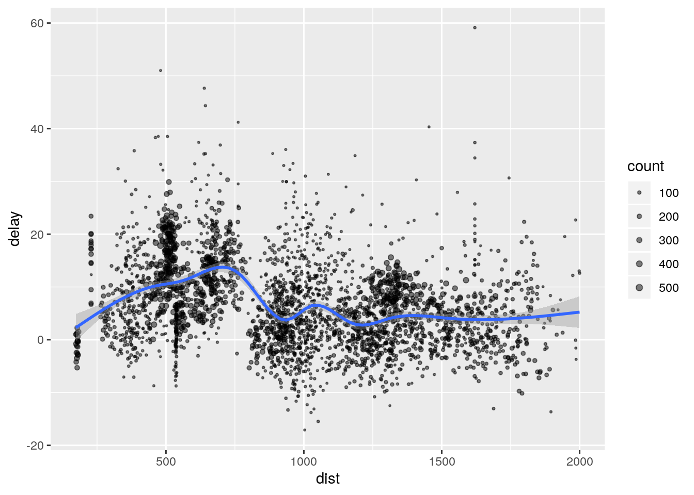

Spark offre la possibilité de travailler à distance sur un jeu de données sans l’importer dans l’environnement R. Ce jeu de données peut être réparti sur plusieurs coeurs de notre machine, ou bien se trouver sur des clusters à distance. Deux solutions permettent d’utiliser Spark sous R.
- Sparklyr est un package développé par Rstudio
- SparkR est un pacakge développé par Spark. Nous présentons l’utilisation des deux packages (Sparklyr d’abord puis SparkR).
R studio gère entièrement l’installation de spark (librairie qui permet de gérer des taches) et sparklyr (package R qui permet d’utiliser un cluster spark). Pour ceci il suffit d’aller dans Connections -> new Connection -> spark. Une fois ceci fait on crée un cluster spark (local si on travaille sur notre propre machine, en changeant l’option master il peut ne pas être local). En local, il crée une collection parallèle en découpant les données sur un certain nombre de coeurs (par défaut tous les coeurs de la machine). Les intructions presse-boutons fournies ci-dessous correspondent aux instructions R suivantes:
FALSE
FALSE Attaching package: 'sparklyr'FALSE The following object is masked from 'package:purrr':
FALSE
FALSE invokeIl est possible de spécifier le nombre de coeurs en utilisant la commande suivante:
pour 4 coeurs.
Si les données sont sur un serveur, on y accède en remplaçant local par l’adresse du serveur.
En cliquant sur l’onglet Spark on a accès automatiquement à une interface web qui contient toutes les taches effectuées sur le cluster spark. Cette feuille peut-être partagé, si les données sont sur un cluster, entre plusieurs personnes.
Remarque : il existe un tutoriel ici https://spark.rstudio.com/, nous l’avons suivi en commençant à la section “Using dplyr” car spark et sparklyr ont été installé par la manipulation précédente.
L’intérêt d’utiliser le serveur spark est d’avoir accès à des fonctions parallélisées et puissantes pour gérer les grosses données.
Sont mis à disposition les fonctions du package dplyr, on peut aussi exécuter des requêtes SQL, faire du machine learning avec sparklyr (voir https://spark.rstudio.com/mlib/ pour une liste complète des fonctions à disposition).
Spark utilise la version 8 de Java. Si Java n’est pas installé sur votre Mac ou la version n’est pas la 8, les commandes à taper dans le terminal (console linux, terminal mac) pour installer la version 8 de Java :
# desinstaller java
brew cask remove java
# reinstaller java version 8.0
brew cask install homebrew/cask-versions/adoptopenjdk8Puis dans la console R :
Pour installer java 8 sur Ubuntu
L’objet sc est en gros l’adresse du cluster spark. C’est un objet de type list.
On va maintenant chercher à envoyer des données vers le serveur. Pour notre cas, nous allons utiliser des données contenues dans les packages suivants:
Pour les envoyer dans le sc, nous utilisons la commande copy_to.
Les données irisn’apparaissent pas dans l’environnement Rstudio. L’objet iris_tbl est une liste contenant en gros l’adresse des données sur le sc.
## [1] "src" "ops"## spark connection master=local[16] app=sparklyr local=TRUE## From: iris
## <Table: iris>On peut afficher les données. On obtient alors un aperçu de la table dans lequel il est spécifié que c’est un objet spark.
## # Source: spark<iris> [?? x 5]
## Sepal_Length Sepal_Width Petal_Length Petal_Width Species
## <dbl> <dbl> <dbl> <dbl> <chr>
## 1 5.1 3.5 1.4 0.2 setosa
## 2 4.9 3 1.4 0.2 setosa
## 3 4.7 3.2 1.3 0.2 setosa
## 4 4.6 3.1 1.5 0.2 setosa
## 5 5 3.6 1.4 0.2 setosa
## 6 5.4 3.9 1.7 0.4 setosa
## 7 4.6 3.4 1.4 0.3 setosa
## 8 5 3.4 1.5 0.2 setosa
## 9 4.4 2.9 1.4 0.2 setosa
## 10 4.9 3.1 1.5 0.1 setosa
## # … with more rowsflights_tbl <- copy_to(sc, nycflights13::flights, "flights")
batting_tbl <- copy_to(sc, Lahman::Batting, "batting")Il est aussi possible d’envoyer sur sc des données contenues dans un fichier (par exemple .csv) sans qu’elles ne passent dans l’envrionnement Rstudio. A l’inverse, il est possible d’écrire des données du Spark dans un fichier type .csv.
temp_csv <- tempfile(fileext = ".csv")
spark_write_csv(iris_tbl, temp_csv)
iris_csv_tbl <- spark_read_csv(sc, "iris_csv", temp_csv)Enfin il est possible d’importer dans un seul objet une base de données découpée en plusieurs fichiers (car trop lourde). Pour cela il faut donner un dossier.
On obtient la liste des données dans le sc avec la commande suivante:
## [1] "batting" "flights" "iris" "iris_csv"Une fois les données sur le Spark, on utilise la fonction de dplyr de la même façon. Toutes les opérations se font sur les clusters (en parallèle). Aucun objet n’apparaît dans l’environnement Rstudio.
# flights_tbl %>% filter(dep_delay == 2)
flights_tbl %>% group_by(tailnum) %>%
summarise(count = n(), dist = mean(distance), delay = mean(arr_delay)) %>%
filter(count > 20, dist < 2000, !is.na(delay)) ## # Source: spark<?> [?? x 4]
## tailnum count dist delay
## <chr> <dbl> <dbl> <dbl>
## 1 N318NB 202 814. -1.12
## 2 N4WRAA 21 1010. 2.32
## 3 N12540 225 481. 19.7
## 4 N820UA 133 1166. -1.69
## 5 N17139 91 1548. -2.90
## 6 N5EXAA 109 1298. -8.03
## 7 N346JB 314 482. 14.8
## 8 N900DE 105 933. 18.7
## 9 N586UA 67 1734. 9.35
## 10 N565JB 267 1337. 12.1
## # … with more rows## [1] "activites" "batting_tbl" "cars" "color_used"
## [5] "flex_gtcars" "flights_tbl" "gtcars" "iris_csv_tbl"
## [9] "iris_tbl" "max_by" "np" "prog"
## [13] "rw_test" "sc" "simulated_rw" "tab"
## [17] "temp_csv"Remarque : Si une erreur apparaît mentionnant la fonction switch_lang, il faut sans doute mettre à jour les packages dplyr et dbplyr, puis redémarrer R.
Si on veut avoir des objets dans R, il faut faire utiliser collect.
delay <- flights_tbl %>%
group_by(tailnum) %>%
summarise(count = n(), dist = mean(distance), delay = mean(arr_delay)) %>%
filter(count > 20, dist < 2000, !is.na(delay)) %>% collectdelay apparaît dans l’environnement. On peut maintenant faire des graphes.
library(ggplot2)
ggplot(delay, aes(dist, delay)) +
geom_point(aes(size = count), alpha = 1/2) +
geom_smooth() +
scale_size_area(max_size = 2)## `geom_smooth()` using method = 'gam' and formula 'y ~ s(x, bs = "cs")'
Afin de créer une nouvelle colonne on utilise
## # A tibble: 336,776 x 20
## year month day dep_time sched_dep_time dep_delay arr_time
## <int> <int> <int> <int> <int> <dbl> <int>
## 1 2013 1 1 517 515 2 830
## 2 2013 1 1 533 529 4 850
## 3 2013 1 1 542 540 2 923
## 4 2013 1 1 544 545 -1 1004
## 5 2013 1 1 554 600 -6 812
## 6 2013 1 1 554 558 -4 740
## 7 2013 1 1 555 600 -5 913
## 8 2013 1 1 557 600 -3 709
## 9 2013 1 1 557 600 -3 838
## 10 2013 1 1 558 600 -2 753
## # … with 336,766 more rows, and 13 more variables: sched_arr_time <int>,
## # arr_delay <dbl>, carrier <chr>, flight <int>, tailnum <chr>,
## # origin <chr>, dest <chr>, air_time <dbl>, distance <dbl>, hour <dbl>,
## # minute <dbl>, time_hour <dttm>, speed <dbl>Beaucoup de méthodes de machine Leanring sont codées pour spark. Elles sont listées ici https://spark.rstudio.com/mlib/.
mtcars_tbl <- copy_to(sc, mtcars)
# transform our data set, and then partition into 'training', 'test'
partitions <- mtcars_tbl %>%
filter(hp >= 100) %>%
mutate(cyl8 = cyl == 8) %>%
sdf_random_split(training = 0.5, test = 0.5, seed = 1099)Tout est dans sc tant qu’on n’a pas utilisé collect.
On ajuste maintenant un modèle linéaire sur le Spark. Les fonctions s’appellent ml_***.
fit <- partitions$training %>%
ml_linear_regression(response = "mpg", features = c("wt", "cyl"))
fit## Formula: mpg ~ wt + cyl
##
## Coefficients:
## (Intercept) wt cyl
## 33.499452 -2.818463 -0.923187fit est un objet dans l’environnement de R. Les objets légers (estimation..) sont bien dans l’environnement. Par contre les choses lourdes (prédiction, données) restent sur sc.
## Deviance Residuals:
## Min 1Q Median 3Q Max
## -1.752 -1.134 -0.499 1.296 2.282
##
## Coefficients:
## (Intercept) wt cyl
## 33.499452 -2.818463 -0.923187
##
## R-Squared: 0.8274
## Root Mean Squared Error: 1.422Pour avoir accès aux prédictions, on doit utiliser :
## # A tibble: 15 x 1
## prediction
## <dbl>
## 1 11.3
## 2 15.3
## 3 11.0
## 4 15.5
## 5 16.4
## 6 16.2
## 7 15.6
## 8 18.3
## 9 18.2
## 10 18.3
## 11 15.3
## 12 20.2
## 13 20.6
## 14 18.9
## 15 25.5** A compléter par Pierre Navaro????**
SparkR est une autre package pour utiliser la bibliothèque Apache Spark. Pour lancer le cluster, il faut utiliser la commande
library(SparkR, lib.loc = c(file.path(Sys.getenv("SPARK_HOME"), "R", "lib")))
sparkR.session(master = "local[*]", sparkConfig = list(spark.driver.memory = "2g"))SPARK_HOME est une variable d’environement qui désigne le lieu d’installation de la bibliothèque Spark.
data.path <- file.path(Sys.getenv("SPARK_HOME"), "data", "mllib","sample_multiclass_classification_data.txt")
training <- read.df(data.path, source = "libsvm")
# Fit a generalized linear model of family "gaussian" with spark.glm
df_list <- randomSplit(training, c(7, 3), 2)
gaussianDF <- df_list[[1]]
gaussianTestDF <- df_list[[2]]
gaussianGLM <- spark.glm(gaussianDF, label ~ features, family = "gaussian")
# Model summary
summary(gaussianGLM)
# Prediction
gaussianPredictions <- predict(gaussianGLM, gaussianTestDF)
head(gaussianPredictions)